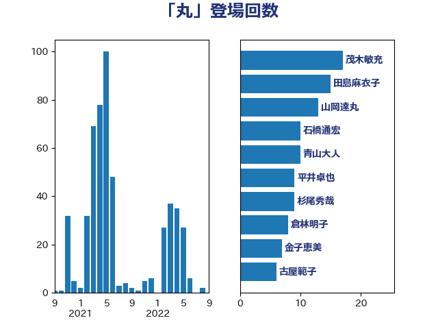

単語「丸」

| 茂木敏充 | 自由民主党 | 17 回 |
| 田島麻衣子 | 立憲民主党 | 15 回 |
| 山岡達丸 | 立憲民主党 | 13 回 |
| 石橋通宏 | 立憲民主党 | 10 回 |
| 青山大人 | 立憲民主党 | 10 回 |
| 平井卓也 | 自由民主党 | 9 回 |
| 杉尾秀哉 | 立憲民主党 | 9 回 |
| 倉林明子 | 日本共産党 | 8 回 |
| 金子恵美 | 立憲民主党 | 7 回 |
| 古屋範子 | 公明党 | 6 回 |
| 小西洋之 | 立憲民主党 | 6 回 |
| 後藤祐一 | 立憲民主党 | 6 回 |
| 篠原孝 | 立憲民主党 | 6 回 |
| 蓮舫 | 立憲民主党 | 6 回 |
| 足立康史 | 日本維新の会 | 6 回 |
| 吉良よし子 | 日本共産党 | 5 回 |
| 大西健介 | 立憲民主党 | 5 回 |
| 松沢成文 | 日本維新の会 | 5 回 |
| 森山浩行 | 立憲民主党 | 5 回 |
| 渡辺周 | 立憲民主党 | 5 回 |
| 高橋千鶴子 | 日本共産党 | 5 回 |
| 塩村あやか | 立憲民主党 | 4 回 |
| 小沢雅仁 | 立憲民主党 | 4 回 |
| 小熊慎司 | 立憲民主党 | 4 回 |
| 山添拓 | 日本共産党 | 4 回 |
| 斉藤鉄夫 | 公明党 | 4 回 |
| 武田良太 | 自由民主党 | 4 回 |
| 石垣のりこ | 立憲民主党 | 4 回 |
| 細田博之 | 自由民主党 | 4 回 |
| 萩生田光一 | 自由民主党 | 4 回 |
| 藤巻健太 | 日本維新の会 | 4 回 |
| 阿部知子 | 立憲民主党 | 4 回 |
| 階猛 | 立憲民主党 | 4 回 |
| 中島克仁 | 立憲民主党 | 3 回 |
| 塩川鉄也 | 日本共産党 | 3 回 |
| 大串博志 | 立憲民主党 | 3 回 |
| 宮本徹 | 日本共産党 | 3 回 |
| 小野泰輔 | 日本維新の会 | 3 回 |
| 山下芳生 | 日本共産党 | 3 回 |
| 枝野幸男 | 立憲民主党 | 3 回 |
| 柚木道義 | 立憲民主党 | 3 回 |
| 石川香織 | 立憲民主党 | 3 回 |
| 福島みずほ | 社会民主党 | 3 回 |
| 秋葉賢也 | 自由民主党 | 3 回 |
| 緑川貴士 | 立憲民主党 | 3 回 |
| 舩後靖彦 | れいわ新選組 | 3 回 |
| 辻元清美 | 立憲民主党 | 3 回 |
| 音喜多駿 | 日本維新の会 | 3 回 |
| 中川正春 | 立憲民主党 | 2 回 |
| 今枝宗一郎 | 自由民主党 | 2 回 |
| 城井崇 | 立憲民主党 | 2 回 |
| 小宮山泰子 | 立憲民主党 | 2 回 |
| 山口俊一 | 自由民主党 | 2 回 |
| 岡本三成 | 公明党 | 2 回 |
| 岩渕友 | 日本共産党 | 2 回 |
| 岩谷良平 | 日本維新の会 | 2 回 |
| 川合孝典 | 国民民主党 | 2 回 |
| 川田龍平 | 立憲民主党 | 2 回 |
| 早稲田ゆき | 立憲民主党 | 2 回 |
| 梅村聡 | 日本維新の会 | 2 回 |
| 浅田均 | 日本維新の会 | 2 回 |
| 浜地雅一 | 公明党 | 2 回 |
| 田嶋要 | 立憲民主党 | 2 回 |
| 田村憲久 | 自由民主党 | 2 回 |
| 石井章 | 日本維新の会 | 2 回 |
| 福島伸享 | 無所属 | 2 回 |
| 稲富修二 | 立憲民主党 | 2 回 |
| 笠井亮 | 日本共産党 | 2 回 |
| 自見はなこ | 自由民主党 | 2 回 |
| 芳賀道也 | 国民民主党 | 2 回 |
| 荒井優 | 立憲民主党 | 2 回 |
| 西銘恒三郎 | 自由民主党 | 2 回 |
| 近藤和也 | 立憲民主党 | 2 回 |
| 青木愛 | 立憲民主党 | 2 回 |
| たがや亮 | れいわ新選組 | 1 回 |
| 一谷勇一郎 | 日本維新の会 | 1 回 |
| 三浦信祐 | 公明党 | 1 回 |
| 上野通子 | 自由民主党 | 1 回 |
| 下条みつ | 立憲民主党 | 1 回 |
| 井坂信彦 | 立憲民主党 | 1 回 |
| 伊藤孝恵 | 国民民主党 | 1 回 |
| 佐藤茂樹 | 公明党 | 1 回 |
| 古賀友一郎 | 自由民主党 | 1 回 |
| 吉川沙織 | 立憲民主党 | 1 回 |
| 吉良州司 | 無所属 | 1 回 |
| 大塚耕平 | 国民民主党 | 1 回 |
| 安江伸夫 | 公明党 | 1 回 |
| 安達澄 | 無所属 | 1 回 |
| 寺田学 | 立憲民主党 | 1 回 |
| 小沼巧 | 立憲民主党 | 1 回 |
| 山下貴司 | 自由民主党 | 1 回 |
| 岡本あき子 | 立憲民主党 | 1 回 |
| 岬麻紀 | 日本維新の会 | 1 回 |
| 岸真紀子 | 立憲民主党 | 1 回 |
| 工藤彰三 | 自由民主党 | 1 回 |
| 平口洋 | 自由民主党 | 1 回 |
| 平木大作 | 公明党 | 1 回 |
| 徳永エリ | 立憲民主党 | 1 回 |
| 斎藤アレックス | 国民民主党 | 1 回 |
| 新妻秀規 | 公明党 | 1 回 |
| 有村治子 | 自由民主党 | 1 回 |
| 木村次郎 | 自由民主党 | 1 回 |
| 末松信介 | 自由民主党 | 1 回 |
| 杉久武 | 公明党 | 1 回 |
| 杉本和巳 | 日本維新の会 | 1 回 |
| 柳ヶ瀬裕文 | 日本維新の会 | 1 回 |
| 横沢高徳 | 立憲民主党 | 1 回 |
| 浅野哲 | 国民民主党 | 1 回 |
| 浜口誠 | 国民民主党 | 1 回 |
| 浜田聡 | NHK党 | 1 回 |
| 浦野靖人 | 日本維新の会 | 1 回 |
| 海江田万里 | 立憲民主党 | 1 回 |
| 滝沢求 | 自由民主党 | 1 回 |
| 牧山ひろえ | 立憲民主党 | 1 回 |
| 玉木雄一郎 | 国民民主党 | 1 回 |
| 田畑裕明 | 自由民主党 | 1 回 |
| 白石洋一 | 立憲民主党 | 1 回 |
| 石原宏高 | 自由民主党 | 1 回 |
| 石原正敬 | 自由民主党 | 1 回 |
| 石川大我 | 立憲民主党 | 1 回 |
| 磯崎仁彦 | 自由民主党 | 1 回 |
| 福田昭夫 | 立憲民主党 | 1 回 |
| 紙智子 | 日本共産党 | 1 回 |
| 舟山康江 | 国民民主党 | 1 回 |
| 藤田文武 | 日本維新の会 | 1 回 |
| 西野太亮 | 自由民主党 | 1 回 |
| 赤羽一嘉 | 公明党 | 1 回 |
| 近藤昭一 | 立憲民主党 | 1 回 |
| 重徳和彦 | 立憲民主党 | 1 回 |
| 野田佳彦 | 立憲民主党 | 1 回 |
| 金田勝年 | 自由民主党 | 1 回 |
| 鈴木憲和 | 自由民主党 | 1 回 |
| 鈴木義弘 | 国民民主党 | 1 回 |
| 鎌田さゆり | 立憲民主党 | 1 回 |
| 長友慎治 | 国民民主党 | 1 回 |
| 高木毅 | 自由民主党 | 1 回 |
| 高橋光男 | 公明党 | 1 回 |
| 高野光二郎 | 自由民主党 | 1 回 |